www.osoyoo.com
| Home | Description | Packing List | Tutorial |
| 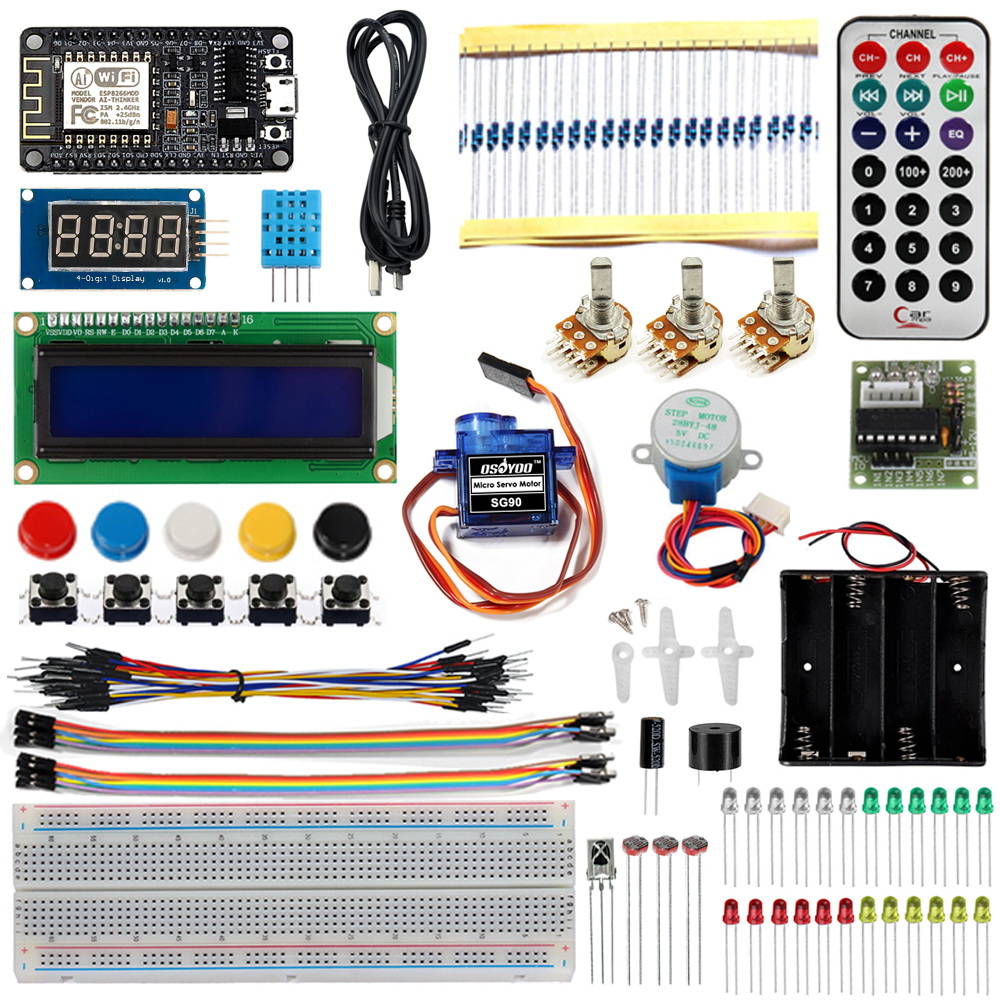 |
|
If you want to learn how to build something cool and Internet-connected, all you need is this starter kit which will get you going with lots of parts that go very well with our service and are the most common sensors and actuators you may want. Sense light, motion, humidity, temperature, and more, then send it through MQTT broker and light up remote LEDs, make noise, and move a motor when a trigger is detected. This pack is designed for people who want to use the new low-cost Arduino compatiable NodeMCU (an ESP8266 WiFi microcontroller). An Arduino or other microcontroller is not required. We pick up 13 kinds of modules to go with our Osoyoo NodeMCU. All of them could be DIY into a small IoT applications, as you have learned our 15 detail lessons about these modules.The guide book contains step by step instructions of how to achieve the goal function. Full example code is provided and explained and even includes some useful software tools also be provided. |
| 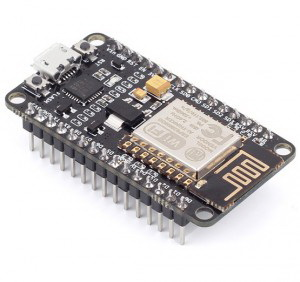 | NodeMCU x1 |
| 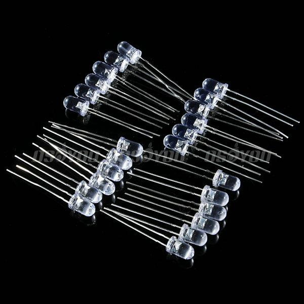 | LED Pack(6 x Bright White, 6 x Red, 6 x Yellow, 6 x Green) x1 |
| 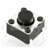 | Push Buttons x5 |
| 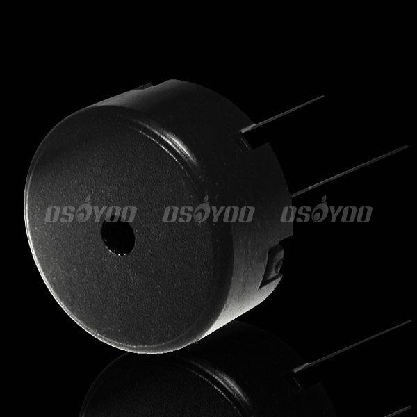 | Buzzer x1 |
 |
Potentiometer(10kilohm adjustable resistor) x3 |
| 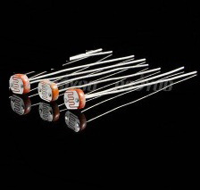 | Photoresistor(light sensor) x3 |
| 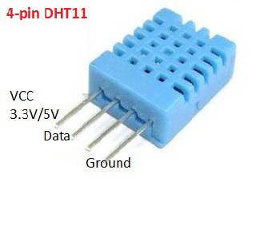 | DHT11 (Temperature/Humidity sensor) x1 |
| 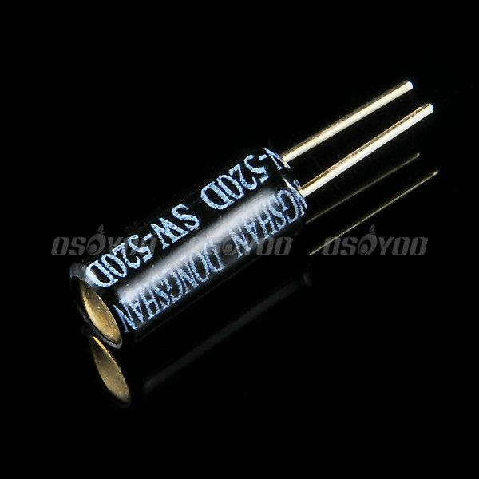 | Tilt sensor x1 |
| 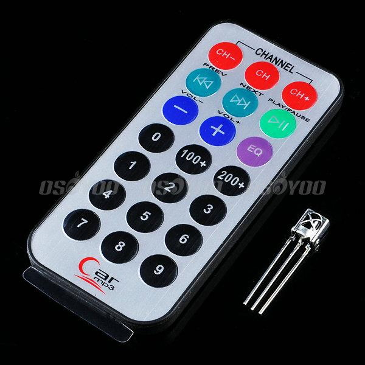 | Infrared Remote Controller and Receiver(VS1838B) x1 |
| 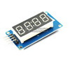 | 4-digit 7 Segment LED Display x1 |
| 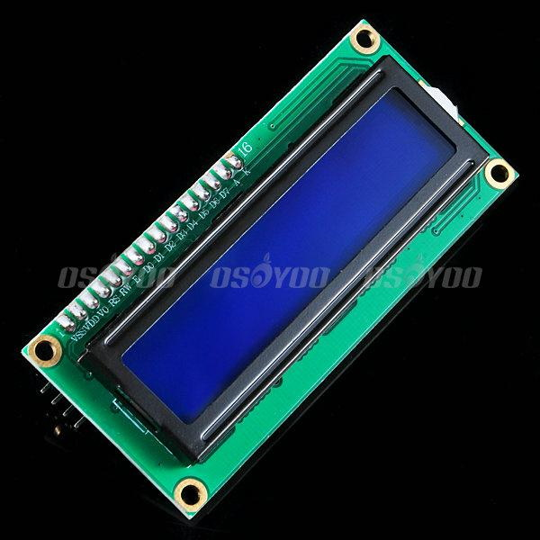 | Alphanumeric I2C LiquidCrystal Display(16x2 LCD ) x1 |
| 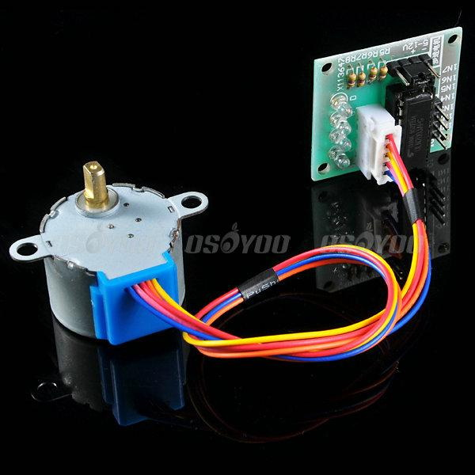 | Stepper Motor+Bridge x1 |
| 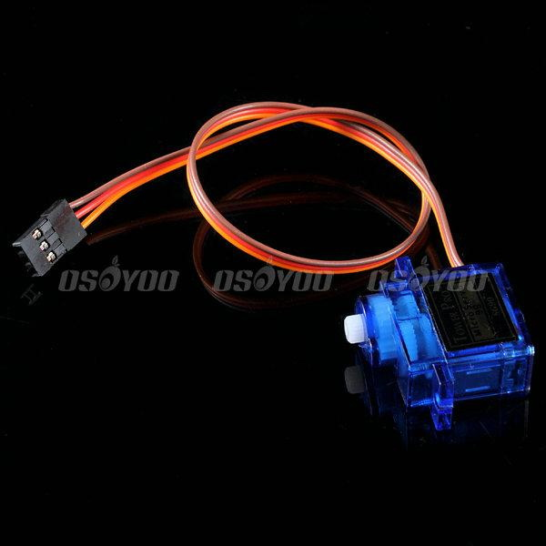 | SG90 Micro Servo Motor x1 |
| 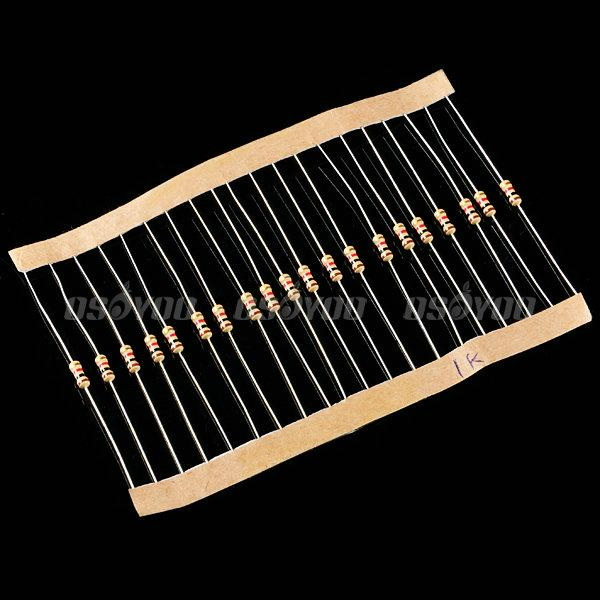 | Resistors Package (20 x 200ohm, 20 x 1Kohm, 20 x 10Kohm, 5 x 1Mohm) x1 |
| 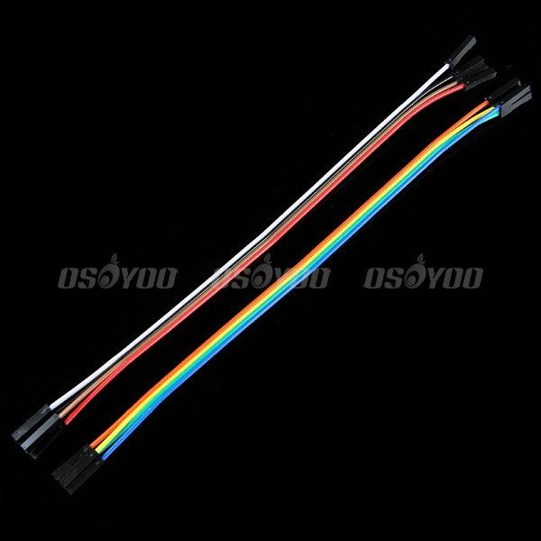 | Jumper Wires Pack(M/M Jumper x 20,F/F Jumper x 20) x1 |
| 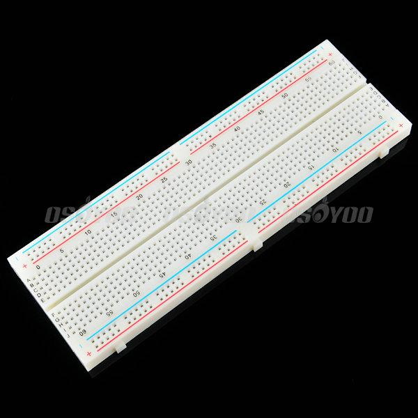 | Solderless Prototype Breadboard x1 |
| 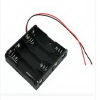 | Battery Box (for 4pcs AAA battery) x1 |
| 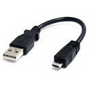 | Micro USB Cable x1 |
| 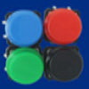 | Colorful Buttons Cap Pack x1 |